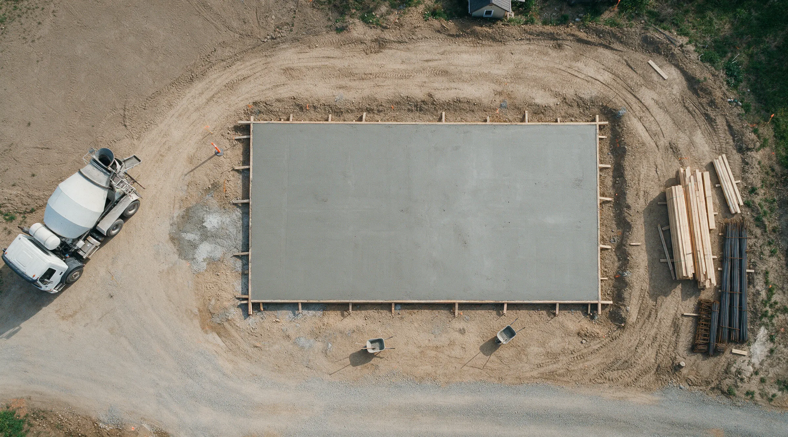
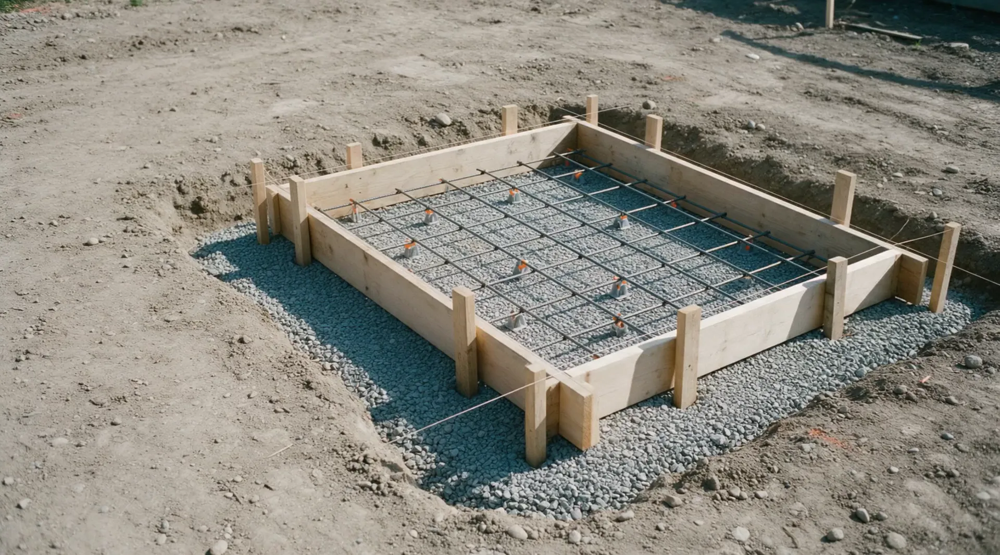
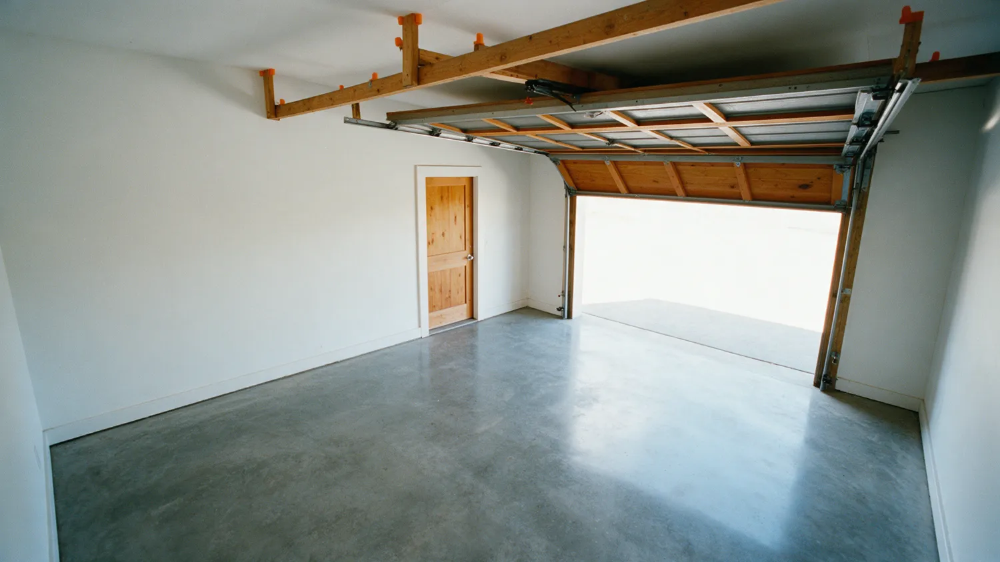
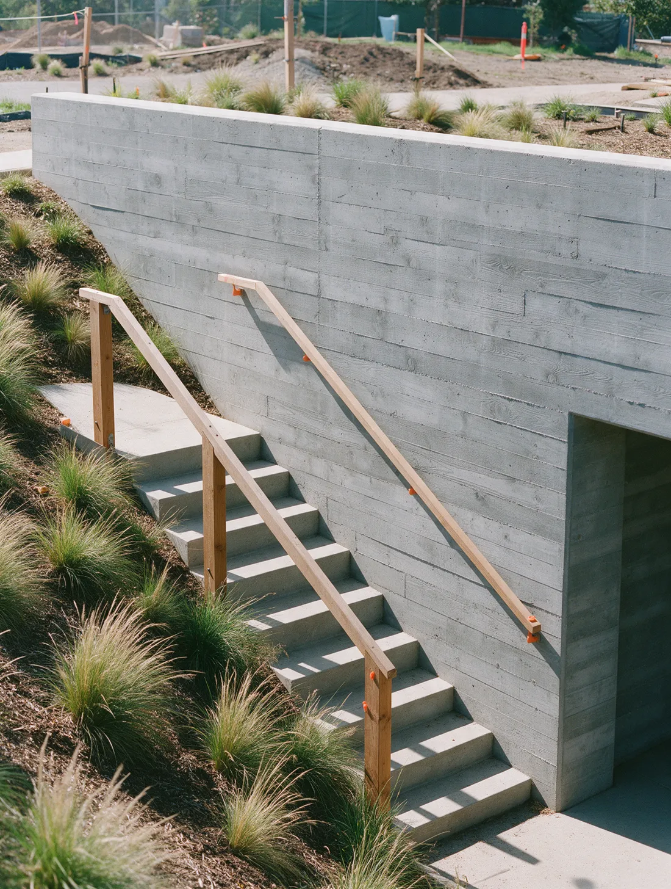
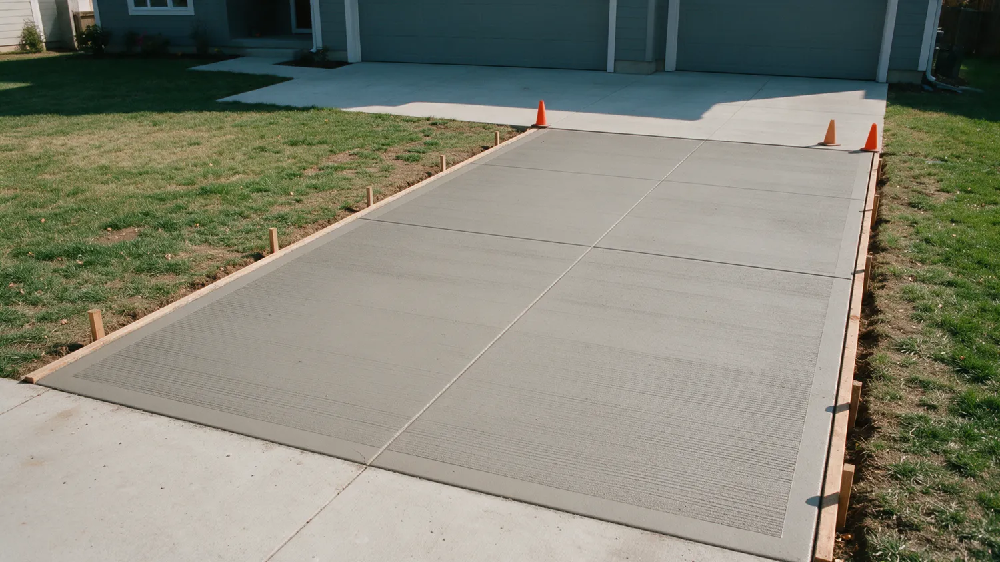

Concrete doesn't do second chances.
AZ Desert Concrete installs driveways, patios and pool decks across the Phoenix metro area.
A truck of concrete gives you about ninety minutes.
Then it starts to set. No undo. No second pour.
Skip the prep, add a little water, rush the finish, and you'll see it in the cracks for years.
This is not a weekend project.


The rushed driveway
Water on the base, a hose in the form.
A wet, loose base settles. The slab on top of it follows.
Soupy mix, poured fast.
Extra water makes concrete easy to place and much weaker once it cures.
Then the cracks show up.
No steel, no planned joints, so the slab picks its own places to break.
And then comes the teardown bill.
Breaking out and re-pouring costs more than doing it right once.

Same driveway. Which crew do you want?


The right way
Same job. Done by pros.
- Compacted base, graded to drain
- Reinforcement where the job calls for it
- Joints planned before the pour
- Surface kept from drying too fast in desert heat
- Sealed to suit the finish
Concrete done right.
- Licensed and insured
- AZ ROC #347665
- Free quotes
- Residential and commercial
What we do.
Residential and commercial. Pick one to see how it works.
Concrete Driveways
Slab, stamped, stained, exposed aggregate, colored, and concrete with artificial grass.
See how we do itConcrete Patios
Stamped, stained and slab patios, plus concrete patio pavers.
See how we do itConcrete Pool Decks
Stamped, plain, concrete squares, stained, and Kool Decking.
See how we do itConcrete Resurfacing
New life for driveways, patios, pool decks, floors and garages.
See how we do itConcrete Slab Pouring
Slabs for home foundations, sheds and outdoor structures.
See how we do itConcrete Sidewalks
Traditional and decorative sidewalks for homes and businesses.
See how we do itConcrete Repair
Cracked or damaged concrete assessed, then repaired or replaced.
See how we do itNot sure which one you need?
What we build.
Example photos.





How we keep it honest.
Concrete is hard to judge until it's too late to change. So we put the important parts in front of you early.
-
A free quote.
We come to your property anywhere in Maricopa County for a free consultation and quote.
-
Licensed and insured.
AZ ROC #347665. Residential and commercial work.
-
From repairs to full pours.
Driveways, patios, pool decks, slabs, sidewalks, resurfacing and repair.
-
Call and talk it through.
Call (602) 789-3054 and describe the job. We will tell you what it needs.
Phoenix concrete, residential and commercial.
AZ Desert Concrete is a licensed and insured concrete contractor serving the Phoenix metro area and most of Maricopa County.
From simple repairs to complex projects, the work covers driveways, patios, pool decks, slabs, sidewalks, resurfacing and repair.
- License
- AZ ROC #347665
- Coverage
- Licensed and insured
- Serving
- Maricopa County
Where we work.
Serving the Phoenix metro area and the towns around it.
- Phoenix
- Mesa
- Chandler
- Scottsdale
- Glendale
- Gilbert
- Tempe
- Surprise
Main service area is Phoenix, with most of Maricopa County covered. Not on the list? Call.
Call (602) 789-3054Booking is simple.
-
Call or send the form
Tell us what you want built or fixed, and where.
-
We come to you
Free consultation at your property, anywhere in Maricopa County.
-
You get a quote
A free quote for the work, with an estimated timeline.
-
We do the work
Prep, pour or resurface, finish, then a walkthrough.
Questions we hear a lot.
What areas do you serve?
The main service area is Phoenix, and most of Maricopa County is covered, including Mesa, Chandler, Scottsdale, Glendale, Gilbert, Tempe and Surprise.
How long will my project take?
It depends on the size and complexity of the job. An estimated timeline is given during the initial consultation.
What does a quote cost?
Quotes are free and come with no obligation. We come to your property for a consultation.
Can concrete be poured in Phoenix summer heat?
Yes, with a plan. Heat makes concrete set faster, so pours are timed for the weather and the surface is kept from drying too fast while it cures.
Do I need a permit?
It depends on the city and the job. Foundations and structural slabs almost always do, and anything in the public right of way usually does. Check with your city or ask us what applies.
Should concrete be sealed?
For most driveways, patios and pool decks, yes. Sealer slows staining and protects color from the sun.
Ready when you are.
Call us, or send the details and we will call you to set up a free quote at your property.